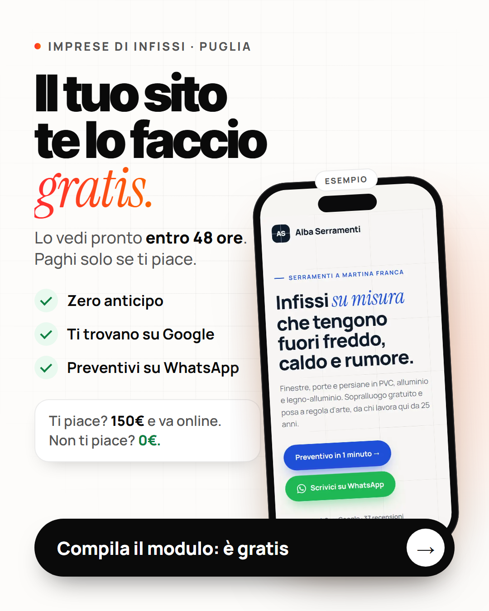
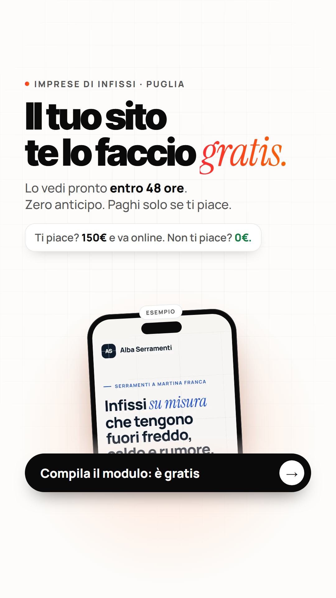
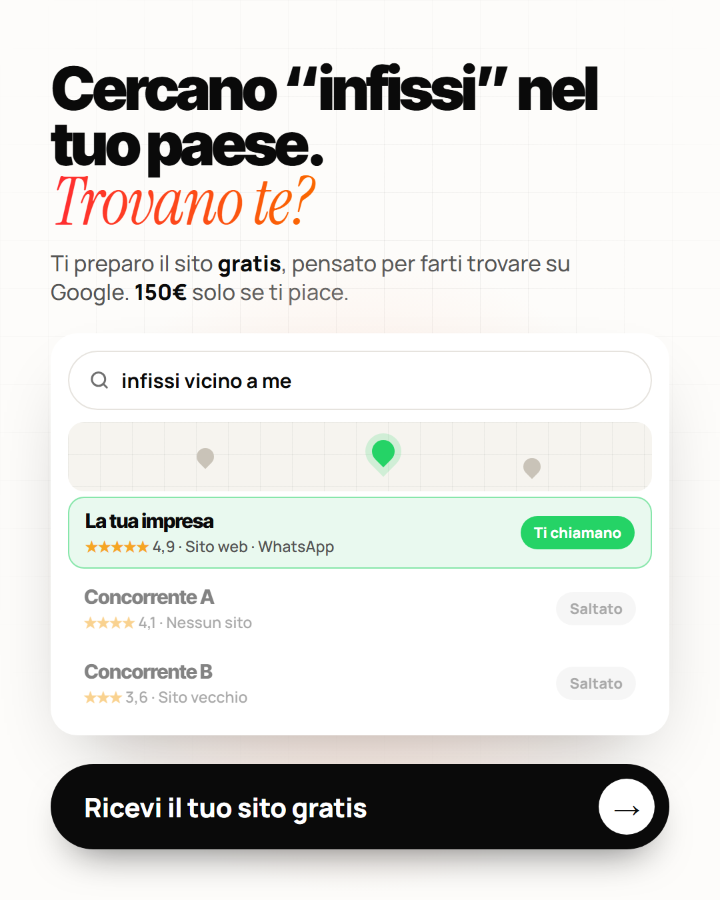
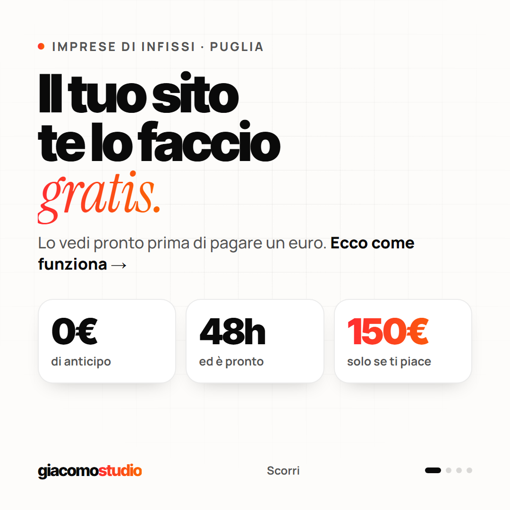
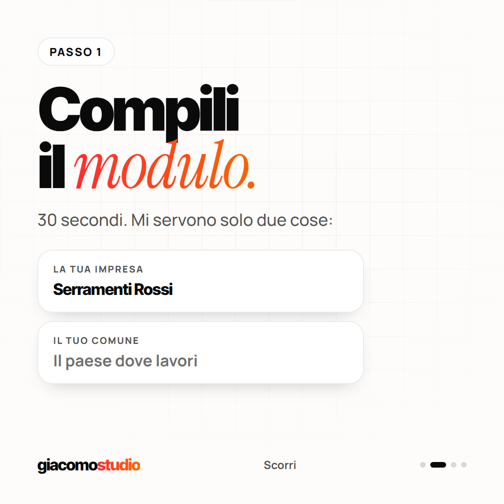
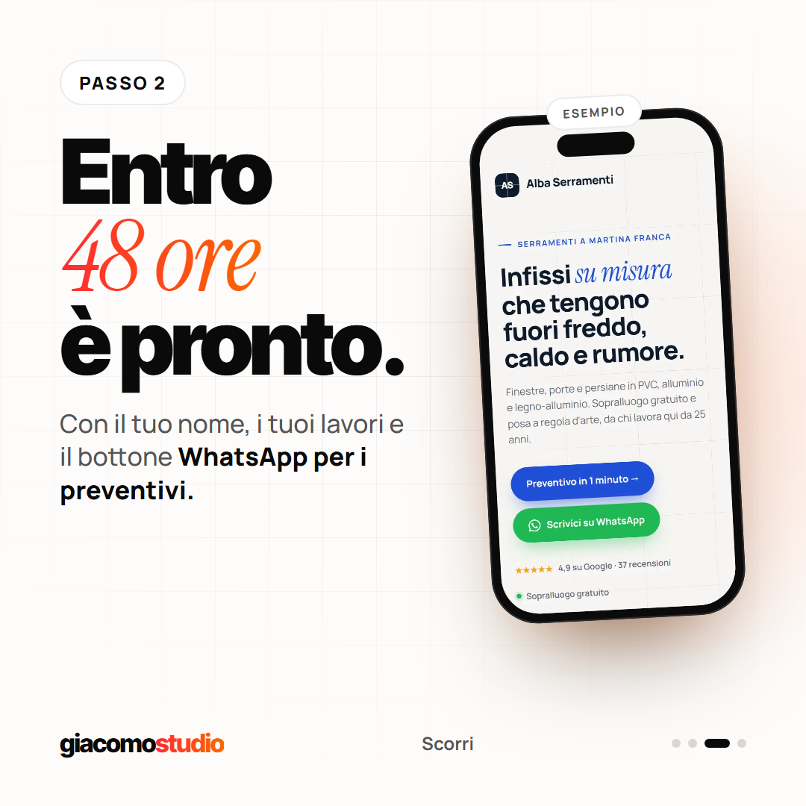

Una persona.
Un brand solo.
Tutto quello che serve per far sembrare giacomostudio sempre la stessa cosa: sul sito, negli annunci, su Instagram, su WhatsApp, su un biglietto da visita. Valori veri da copiare, regole brevi, esempi che funzionano.
Prima di creare qualcosa
Leggi Voce (06) e Colore (04). Sono le due regole che si sbagliano più spesso.
Se serve un valore
Token e risorse (12): CSS da copiare, file del logo, checklist prima di pubblicare.
Se cambi qualcosa
Cambia prima il sito, poi questo manuale, poi CLAUDE.md. Il sito vince sempre.
Com'era il brand.
Cosa abbiamo sistemato.
Il 22 novembre 2026 il brand aveva due facce: un sito chiaro appena rifatto e annunci Meta neri, con un altro carattere e altri colori. Questa è l'analisi completa, punto per punto, con quello che è stato fatto.
Il quadro in breve
sistemate su sito, annunci, icona e documenti
tenute così per scelta, con il motivo scritto
regola nuova per il futuro: la scala di testi e angoli
da fare a mano: rinominare la pagina Facebook
Punti di forza (da non toccare)
Un'offerta che si capisce in 5 secondi
"Gratis da vedere · 48 ore · 150€ solo se ti piace". Tre numeri, nessuna parola difficile. È il cuore del brand, più del logo.
Una faccia e un nome
"Rispondo io, Giacomo". Nessuna agenzia può dirlo. È il motivo per cui il cliente si fida di uno sconosciuto.
Un sistema tipografico riconoscibile
Nero pesantissimo e un corsivo elegante in gradient. Si riconosce anche senza logo.
Il verde ha un significato
Verde = sì, WhatsApp, garanzia. Usato solo così, guida l'occhio verso la decisione.
Le 18 incongruenze
| # | Cosa non tornava | Cosa si è fatto | Stato |
|---|---|---|---|
| 1 | Due facce. Annunci neri in Clash Display e Inter, spunte arancioni, pulsante in gradient. | 7 annunci rifatti nello stile del sito (capitolo 11). | Sistemato |
| 2 | Città nella demo. Lo screenshot di Alba dice "Serramenti a Martina Franca". | Resta: è un'impresa inventata e la città la rende credibile. Eccezione alla regola "niente città". | Scelta |
| 3 | Telefono finto negli annunci, con testi diversi dal sito d'esempio vero. | Negli annunci c'è lo screenshot vero, con l'etichetta "Esempio". | Sistemato |
| 4 | Ruolo scritto in due modi. Alt della foto: "Brand Designer e Developer". | "Giacomo, studente di Ingegneria Informatica e web designer". | Sistemato |
| 5 | CLAUDE.md con frasi della nicchia ristoranti e "4 card" invece di 5. | Aggiornato a serramentisti. | Sistemato |
| 6 | Bianco sul verde WhatsApp: contrasto 1,98:1. | Resta: è il verde riconoscibile di WhatsApp. Testo sempre grande e in grassetto. | Scelta |
| 7 | Grigio delle note #8a8a8a: 3,1–3,4:1. | --soft: #707070 (4,8:1). | Sistemato |
| 8 | Arancione su testo piccolo e contorno di selezione: 2,9:1. | Nuovo --orange-ink: #b84d00 (5,0:1). | Sistemato |
| 9 | Verde scuro #128c4a: 4,31:1, appena sotto il minimo. | --wa-ink: #108043 (5,0:1). | Sistemato |
| 10 | Crocette del confronto quasi invisibili (2,06:1). | #8f897f (3,4:1, basta per un simbolo). | Sistemato |
| 11 | Tre colori di fondo tra sito, pagine legali e CLAUDE.md. | Uno solo: #fdfcfa e #f6f4ef, quelli del sito. | Sistemato |
| 12 | Colori sparsi: 5 verdi chiari, 8 grigi, #333 scritto a mano. | Raccolti in token con un nome (--wa-soft, --track…). | Sistemato |
| 13 | 28 dimensioni di testo, 21 arrotondamenti. | Il sito non si tocca (funziona). La scala da usare d'ora in poi è nel capitolo 05 e 07. | Scala fissata |
| 14 | Ruolo in "Chi sono" rosso pieno, mentre gli altri corsivi sono in gradient. | Resta: scelta fatta nel redesign del 22/11. | Scelta |
| 15 | Il nome in quattro forme. | Regola unica (capitolo 03). La pagina Facebook "Giacomostudio.it" va rinominata "Giacomo Studio". | Da fare |
| 16 | Icona sfocata a 16px, nessuna icona per iPhone. | Nuova G bianca su riquadro gradient e set completo di icone. | Sistemato |
| 17 | Pagine legali senza il corsivo. | Restano sobrie: lì serve leggere, non emozionare. | Scelta |
| 18 | Prezzo barrato 390€. | Resta, per scelta di Giacomo. | Scelta |
Anche la riga sull'upsell tolta da "Chi sono" è una scelta: l'upsell vive solo nella FAQ 6 (capitolo 02).
Chi è giacomostudio.
E per chi.
giacomostudio non è un'agenzia. È Giacomo: studente di Ingegneria Informatica e web designer, una persona sola che fa tutto, dalla strategia all'assistenza. Questo non è un limite da nascondere. È il motivo per cui il cliente lo sceglie.
Frase di posizionamento
Per i titolari di imprese di infissi e serramenti in Puglia che perdono preventivi perché online non si vedono, giacomostudio è il web designer che ti prepara il sito gratis in 48 ore e ti fa pagare 150€ solo se ti piace. A differenza delle agenzie, parli sempre con chi fa il lavoro, non paghi anticipi e vedi il sito finito prima di decidere.
Missione
Portare online le imprese di infissi della Puglia senza far rischiare loro un euro. Il sito è il primo lavoro insieme, non l'ultimo.
Il cliente
Il titolare dell'impresa di infissi
- Impresa piccola, spesso familiare. Lui sta in cantiere quasi tutto il giorno.
- Un lavoro vale migliaia di euro: vive di richieste di preventivo.
- Online ha al massimo un Instagram e una scheda Google incompleta.
- Decide su WhatsApp. Non legge PDF, non compila form lunghi, non fissa call.
- È quasi sempre dal telefono.
Cosa pensa davvero
- Ha già ricevuto preventivi da agenzie a 1.500–3.000€ e si è spaventato.
- Il suo dubbio vero non è "quanto costa". È "e se poi non mi piace, o mi frega?"
- Per questo la garanzia sta al centro di tutto.
- Si fida di chi è "di qui": per questo si dice Puglia, sempre la regione, mai una città.
Le quattro obiezioni, in quest'ordine
Il traffico è freddo: nessuno conosce Giacomo. Ogni pagina, annuncio o carosello risponde a queste domande nello stesso ordine.
Non mi serve.
Ti cercano su Google e trovano chi compare prima di te. Il sito vecchio, o nessun sito, ti fa perdere preventivi.
Non mi fido.
Faccia, nome, "rispondo io". Lo vedi finito prima di pagare. Se non ti piace, 0€.
Costa troppo.
150€, una volta sola. Un lavoro in più lo ripaga decine di volte.
È complicato.
Mi scrivi su WhatsApp. Testi e foto li sistemo io. Tu continui a montare finestre.
Personalità
Giacomo è un artigiano, come i suoi clienti: fa il lavoro bene, con le sue mani, e ci mette la faccia. Il brand parla come parlerebbe lui al bancone di un fornitore.
Frasi corte, punto fermo. Nessun giro di parole.
Numeri al posto degli aggettivi. 48 ore, non "velocissimo".
Promette solo quello che consegna. "Il primo posto su Google non lo promette nessuno onesto."
Del tu, in prima persona. "Rispondo io." Mai "noi".
Cosa giacomostudio non è
Un'agenzia, un team, "i nostri reparti". Mai il "noi".
Offerte lampo, "solo 5 posti", conti alla rovescia. La scarsità è stata tolta apposta.
"Partner digitale", "soluzioni innovative", "presenza online a 360°". Né parole tecniche.
Perché 150€
Sito a 150€: il cliente entra con un rischio quasi nullo e vede che Giacomo consegna.
Il sito funziona, il rapporto c'è. Da qui nasce il resto.
Più contatti, gestione di Google e dei social: qui sta il margine vero.
Regola: l'upsell si accenna, non si vende. Sul sito vive in una frase sola (FAQ 6, "piano mensile senza vincoli"). Niente sezioni, pacchetti o listini per i servizi mensili: ogni offerta in più abbassa le richieste per quella da 150€. Il resto si propone a voce, dopo la consegna.
Il nome scritto.
La G.
Il logo è il nome, scritto in minuscolo e tutto attaccato: giacomo in nero, studio in gradient. La G è la sua firma corta, per i posti dove il nome non ci sta.
Come si scrive il nome
| Dove | Forma | Esempio |
|---|---|---|
| Logo (disegnato) | giacomostudio minuscolo, attaccato, "studio" in gradient | giacomostudio |
| Nel testo, nei documenti, nei titoli delle pagine | Giacomo Studio, due parole con le maiuscole | "Termini di Giacomo Studio" |
| Instagram, Facebook, link | @giacomostudio.it · giacomostudio.it | Nome profilo: Giacomo Studio |
| Messaggi e chiamate | Giacomo: è lui che parla | "Ciao, sono Giacomo." |
GiacomoStudio · Giacomostudio.it come nome · giacomo studio (minuscolo con lo spazio) · GS · Studio Giacomo
Il nome della pagina Facebook va cambiato in Giacomo Studio. Il link resta giacomostudio.it.
Nelle frasi parla Giacomo in prima persona: "lo preparo io", mai "Giacomo Studio prepara".
Versioni
La G
Riquadro 32×32 con angoli da 8 (un quarto del lato), riempito dal gradient del brand da sinistra a destra. Dentro, la G storica di giacomostudio in bianco, al 62% del riquadro e centrata.
Perché così: la G di prima era in gradient su fondo trasparente. A 16px l'arancione sul bianco della scheda non aveva contrasto e la stanghetta si impastava. Il bianco sul pieno si legge a qualsiasi misura, su schede chiare e scure.
Per avatar e icone dell'iPhone si usa la versione quadrata (mark-quadrato.svg): Instagram la ritaglia a cerchio, iOS arrotonda da solo.
Spazio intorno e misure minime
Regole
- Spazio libero intorno al logo: almeno metà dell'altezza della G su tutti i lati.
- Nome scritto: almeno 96px di larghezza sullo schermo, 25mm in stampa.
- G: almeno 16px (scheda del browser), 6mm in stampa.
- Sotto queste misure si usa solo la G.
Usi vietati
Deformato
Altri colori per "studio"
Con le maiuscole
Ombre, contorni, effetti
Gradient spostato o su tutto
Ruotato
Su fondo gradient
La G ricolorata
Avorio, nero, gradient.
Il verde dice sì.
Una base chiara e calma, un nero deciso per i titoli e per i pulsanti, il gradient rosso-arancio come firma. Il verde è un segnale, non un colore decorativo. Tocca un valore per copiarlo.
Base
--bg · fondo di tutte le pagine--bg-alt · sezioni alterne, riquadri--ink · titoli, testo, pulsante principale--muted · testo secondario--soft · note, didascalie--track · barre vuote, bordi caldi--line · bordi delle card (.14 per quelli forti)Firma
--grad · sempre a 90°, da rosso a arancio--red · inizio del gradient--orange · icone, dettagli grandi--orange-ink · arancio per testo piccolo e focus--orange-soft · fondo delle icone--halo · alone caldo dietro i telefoniSì
--wa · WhatsApp, garanzia, "fatto"--wa-ink · spunte, "0€", testo verde--wa-soft · fondo della garanziaIl verde ha un solo significato
WhatsApp, garanzia, conferme ("Approvato", "Ti chiamano", ✓). Mai come colore di decorazione, mai per i titoli.
Proporzioni
A occhio, su ogni schermata. Il gradient è poco: per questo si nota.
Dove va il gradient
- La seconda parte dei titoli, in corsivo
- "studio" nel logo e la G
- Il pallino dei kicker
- Barre che si riempiono (tempi, passi, cursore)
- Il pulsante del Check-up, e solo quello
- Pulsanti WhatsApp o pulsanti principali
- Fondi di sezioni o di card intere
- Testo lungo o testo piccolo
- In diagonale o con altri colori in mezzo
Contrasto (minimo 4,5:1 per il testo)
| Testo | Su | Contrasto | Uso |
|---|---|---|---|
| Inchiostro | Avorio | 19,3:1 | Tutto |
| Grigio testo | Avorio | 7,3:1 | Testo secondario |
| Grigio note | Avorio · avorio scuro | 4,8 · 4,5:1 | Note, didascalie |
| Arancio testo | Bianco | 5,1:1 | Etichette arancioni, focus |
| Verde testo | Bianco | 5,0:1 | Spunte, "0€" |
| Arancio | Bianco | 3,0:1 | Solo icone e testo sopra i 24px |
| Bianco | Verde WhatsApp | 2,0:1 | Eccezione decisa: solo pulsanti, testo ≥15px in grassetto |
Il nero
Sul sito è solo la chiamata finale (#contatto). Griglia bianca al 6%, alone arancio dall'alto.
Valori sul nero
- Fondo
#0a0a0a - Titoli
#ffffff, testorgba(255,255,255,.65) - Griglia
rgba(255,255,255,.06), 48px - Alone
rgba(250,104,0,.32)radiale - Social: al massimo una storia nera ogni cinque contenuti
Nero pesante.
Un tocco di corsivo.
Tre caratteri, tutti gratuiti su Google Fonts. Un nero compatto che sembra un cartello da cantiere, un corsivo elegante che ricorda una firma, un testo pulito che si legge bene dal telefono.
- 800 · 900
- Interlinea .92–1 · spaziatura −0,05em
- Perché
- Stretto e pesante: titoli corti che si leggono da lontano.
- Corsivo 400, in gradient
- 1,08× il titolo · spaziatura −0,02em
- Perché
- La parte umana della frase. Una volta per titolo, mai nel testo.
- 400 · 500 · 600 · 700 · 800
- 16px · interlinea 1,6
- Perché
- Chiaro e caldo, regge anche a 13px dal telefono.
Il titolo in due tempi
Paghi solo se ti piace.
Prima parte
Il fatto, in nero, Inter Tight. Breve, con il punto.
Seconda parte
La conseguenza per il cliente, in corsivo gradient. Va a capo.
Quando
Hero, titoli di sezione, chiamata finale, titoli di post e annunci. Non nei titoli piccoli delle card.
Scala
Non paghi niente adesso. Preparo il sito, te lo mostro finito, e decidi tu.
Chi visita il sito risponde a quattro domande con un tocco.
È un conto, non una promessa.
Per tutto quello che è nuovo, usa queste misure. I valori in mezzo che oggi esistono sul sito (13,5px, 14,5px…) restano dove sono, ma non vanno copiati.
Numeri e prezzi
150€ con il simbolo attaccato · 48 ore · 48h solo nei numeri grandi · 1.500€ col punto delle migliaia
€150 · 150 euro · 150,00€ · due giorni (scrivi il numero) · "poche ore"
Gli intervalli con il trattino lungo e gli spazi: 1.500 – 8.000€, 4 – 12 settimane.
Parla come al bancone.
Frasi corte. Punto.
Il cliente monta finestre, non legge brochure. Ogni frase deve poterla dire Giacomo a voce, al telefono, senza vergognarsi.
Cinque regole
1 · Io e tu
Giacomo parla in prima persona singolare ("lo preparo io"). Il cliente è sempre "tu" ("la tua impresa"). Mai "noi", mai "voi".
2 · Frasi corte, punto fermo
Il ritmo si fa col punto, non con le virgole. "Se non ti convince, ci salutiamo. Fine."
3 · Numeri, non aggettivi
"150€", "48 ore", "zero anticipo". Mai "conveniente", "rapidissimo". Unica eccezione: "rispondo subito".
4 · Zero parole tecniche
"Si vede bene dal telefono", non "responsive". "Ti trovano su Google", non "SEO". "Lo aggiorni in un minuto", non "CMS".
5 · Solo promesse vere
Se non lo puoi consegnare, non lo scrivi. Niente "primo posto su Google", niente "clienti garantiti", niente recensioni o numeri inventati. Le demo si chiamano sempre "Esempio".
Parole
- gratis
- lo vedi
- paghi solo se ti piace
- zero anticipo
- rispondo io
- preventivi su WhatsApp
- ti trovano su Google
- la tua impresa
- Puglia
- dal telefono
- finito
- ci salutiamo
- soluzioni innovative
- partner digitale
- presenza online a 360°
- chiavi in mano
- responsive
- SEO
- il nostro team
- offerta lancio
- ultimi posti
- incredibile
- il migliore
- Bari, Lecce, Taranto…
Prima e dopo
Punteggiatura e simboli
Punto esclamativo
Quasi mai. Uno ogni tanto se serve, mai due.
Emoji
Sito e annunci: mai. Social e WhatsApp: al massimo una per messaggio, utile (👇 verso un link), mai al posto delle parole.
Simboli ammessi
✦ nella nota del prezzo · ✓ ✗ nei confronti · → negli inviti a scorrere · · per separare
Messaggi WhatsApp pronti
Da salvare come risposte rapide in WhatsApp Business. [Nome] e [link] si cambiano ogni volta.
Angoli morbidi.
Griglia da disegno tecnico.
Lo spazio è largo e pulito, come un cantiere in ordine. La griglia sullo sfondo ricorda un disegno tecnico di un infisso: è il dettaglio che lega il brand al mestiere del cliente.
Griglia e alone
Come si usa
- Quadretti da 48px, linee nere al 5,5% (bianche al 6% sul nero)
- Sfuma verso i bordi con una maschera ellittica
- Solo dietro l'hero e nel blocco nero finale; negli annunci in quadretti da 72px
- L'alone pesca (
#ffe6da) sta sempre dietro un telefono
Arrotondamenti
Su telefono le card scendono a 26px e i blocchi a 32px. Il telefono disegnato ha 44px fuori e 34px sullo schermo.
Spaziature
Misure della pagina
- Contenitore: 1120px al centro
- Margini laterali: 24px · 22px sotto 860px · 20px sotto 680px
- Spazio tra le sezioni: 112px · 92px · 72px
- Intestazione di sezione centrata, massimo 880px, poi 64px di spazio
- Punti di rottura: 860 · 740 · 680 · 340px
- Si progetta prima a 375px: quasi tutti arrivano dal telefono
Ombre
0 10px 30px -18px rgba(10,10,10,.25) · card, pulsanti
0 30px 70px -32px rgba(10,10,10,.28) · riquadri in primo piano
I pezzi del sito.
Funzionano davvero.
Copiati dal sito, con gli stessi nomi delle classi. Se ti serve un pezzo nuovo, prima controlla qui se esiste già.
Pulsanti
.btn-dark
Il principale. Nero, a pillola. Ogni pulsante WhatsApp ha il logo ufficiale.
.btn-wa
Verde: solo nella chiamata finale e nella barra fissa su telefono.
.cu-submit
Gradient: solo nel modulo Check-up, così non sembra WhatsApp.
.btn-link
Secondario, sottolineato. Al massimo uno accanto al principale.
Kicker, pillole, spunte
.kicker
.pkg-pill
- Dominio e hosting inclusi
- Zero anticipi
.checklist · .check-icon
Card
Se non hai un sito, chiamano chi compare prima di te.
Fondo bianco, bordo leggero, radius 32. Una sola idea per card.
Telefono con la demo

.phone
- Sempre lo screenshot vero del sito di esempio, mai un sito disegnato a mano
- Sempre l'etichetta "Esempio": è un'impresa inventata
- Inclinato di −3°, con l'alone pesca dietro
- Nell'hero galleggia (7s) e scorre da solo una volta
- Unica eccezione disegnata: il preventivo guidato
Tempi, approvato, domande
Davvero me lo fai vedere gratis?
Nessun trucco. Non chiedo anticipi e non blocco carte.
Ci dobbiamo vedere?
Non serve. Si fa tutto su WhatsApp e al telefono, nei tuoi orari.
Chiamata finale
Vederla non ti costa niente.
.cta-box · l'unico blocco nero della pagina.
Poche animazioni.
Lente e precise.
Il movimento serve a far capire, non a stupire: una barra che si riempie dice "48 ore" meglio di un aggettivo. Niente luci che pulsano, niente cose che saltano.
La curva
cubic-bezier(.2,.7,.2,1)Una sola curva per tutto (--ease): parte decisa, arriva morbida.
.reveal · .d1 .d2 .d3Ingresso: da trasparente e 20px più in basso, 0,8s. I blocchi vicini arrivano a 0,08s l'uno dall'altro.
Durate
| Cosa | Durata | Dove |
|---|---|---|
| Passaggio del mouse | 0,2s · su di 2px | Pulsanti, link al sito d'esempio |
| Domanda che si apre | 0,35s | FAQ |
| Ingresso dei blocchi | 0,8s · scaglioni 0,08s | Tutte le sezioni |
| Barra dei tempi | 1,6s · nodi a 0,2 / 1 / 1,8s | Pacchetto, card 4 |
| Linea dei passi | 2,2s | Come funziona |
| Telefono che galleggia | 7s · 10px | Hero |
| Ricerca che si scrive da sola | una lettera ogni 60–90ms | Card Google |
Regole
Senza animazioni si legge tutto
Tutto è visibile anche senza JavaScript. I blocchi si nascondono solo se c'è html.js, e dopo 3 secondi riappaiono comunque.
"Riduci movimento"
Ogni animazione nuova si spegne in prefers-reduced-motion, mostrando lo stato finale.
Un solo osservatore
Sul sito c'è un unico IntersectionObserver (revealIO). Le animazioni nuove si agganciano a .is-in.
Nei video e nelle storie
Testo che si scrive da solo con il cursore che lampeggia: per le ricerche su Google.
Numeri che salgono: solo per numeri veri (48h, 0€, 150€).
Cose vere.
Niente foto di repertorio.
Il cliente deve vedere cosa riceve e chi c'è dietro. Ogni immagine finta toglie fiducia.
- Strette di mano, persone in giacca e cravatta, uffici di vetro
- Mockup di siti mai esistiti
- Loghi di clienti, recensioni o numeri inventati
- Foto di cantieri presentate come lavori di un cliente se non lo sono
- Immagini generate che sembrano foto vere
Le foto dei loro cantieri, anche fatte col telefono. Altrimenti quelle della scheda Google o di Facebook, mai stock.
Icone
Disegno
A tratto, griglia 24, spessore 1,9–2,4, estremità arrotondate. Stesso stile di Feather: niente icone piene o a colori.
Colore
Arancio su pesca per i problemi, verde su verde chiaro per la garanzia, nero per tutto il resto.
Sempre il logo ufficiale (whatsapp.svg), mai ridisegnato, solo dove si apre davvero WhatsApp.
Tutto da copiare.
In un posto solo.
CSS
@import url('https://fonts.googleapis.com/css2?family=Inter+Tight:wght@800;900&family=Instrument+Serif:ital@1&family=Manrope:wght@400;500;600;700;800&display=swap');
:root {
--bg: #fdfcfa; /* fondo pagina, avorio */
--bg-alt: #f6f4ef; /* sezioni alterne, riquadri */
--ink: #0a0a0a; /* testo, titoli, pulsante principale */
--muted: #555555; /* testo secondario */
--soft: #707070; /* note e didascalie (≥4,5:1) */
--line: rgba(0,0,0,.08);
--line-strong: rgba(0,0,0,.14);
--track: #e3ded4; /* barre vuote, bordi caldi */
--red: #ff2c32;
--orange: #fa6800;
--orange-ink: #b84d00; /* arancio per testo piccolo e focus */
--orange-soft: #fff1ea; /* fondo icone */
--grad: linear-gradient(90deg, #ff2c32 0%, #fa6800 100%);
--halo: #ffe6da; /* alone dietro i telefoni */
--wa: #25d366; /* WhatsApp, garanzia, sì */
--wa-ink: #108043; /* verde per testo e spunte */
--wa-soft: #e9f9ef; /* fondo verde chiaro */
--shadow: 0 30px 70px -32px rgba(10,10,10,.28);
--shadow-sm: 0 10px 30px -18px rgba(10,10,10,.25);
--display: 'Inter Tight', 'Manrope', system-ui, sans-serif;
--serif: 'Instrument Serif', Georgia, serif;
--body: 'Manrope', system-ui, -apple-system, 'Segoe UI', sans-serif;
--ease: cubic-bezier(.2,.7,.2,1);
}
.serif-accent { /* seconda parte dei titoli */
font-family: var(--serif); font-style: italic; font-weight: 400;
letter-spacing: -.02em; font-size: 1.08em; line-height: .9;
background: var(--grad); -webkit-background-clip: text; background-clip: text;
-webkit-text-fill-color: transparent;
}
File
brand/logo/wordmark.svgNome scritto, su chiaro (anche-negativo,-nero,-bianco)brand/logo/lockup.svgG + nome affiancati (anche-negativo)brand/logo/mark.svgLa G con angoli arrotondati ·mark-quadrato.svga filo per avatar e iPhonebrand/logo/avatar-social-1080.pngFoto profilo per Instagram, Facebook, WhatsApp, Googlelogo-mark.svg·favicon-32.png·apple-touch-icon.png·icon-512.pngIcone del sito (cartella principale)og-template.html→og-image.jpgAnteprima dei link, 1200 × 630img/esempio-mobile.webpScreenshot del sito di esempio per i telefoniDocuments/meta ads/serramentisti-puglia/src/Sorgenti degli annunciCLAUDE.mdRegole operative del sito (offerta, tracking, test)
Prima di pubblicare qualsiasi cosa
- Si capisce in 5 secondi? Cosa, quanto, quando, che rischio.
- Parla Giacomo, in prima persona, al "tu". Nessun "noi".
- Numeri veri: 150€, 48 ore, 0€ di anticipo. Uguali al sito.
- Nessuna città, solo Puglia.
- Nessuna scarsità inventata, nessuna promessa di primo posto.
- Titolo in due tempi, un solo corsivo gradient.
- Verde solo per sì e WhatsApp. Gradient mai sui pulsanti.
- Demo con l'etichetta "Esempio".
- Leggibile dal telefono: testo non sotto 13px sul sito, 22px negli annunci.
- Il nome giusto: giacomostudio nel logo, Giacomo Studio nel testo.
Stesso brand.
Ovunque ti trovino.
Chi vede un annuncio apre il profilo, poi il sito, poi scrive su WhatsApp. In ogni passaggio deve ritrovare gli stessi colori, la stessa voce, la stessa faccia.
Profilo Instagram
Impostazioni
avatar-social-1080.png(la G quadrata, Instagram la ritaglia a cerchio)La stessa foto e lo stesso nome vanno su Facebook, WhatsApp Business e Google: chi passa da uno all'altro deve capire subito che è la stessa persona.
Formati
Cinque modelli di post
Una rubrica fissa per ogni tipo di contenuto. Alternarle tiene il profilo ordinato e fa capire in 3 secondi di cosa parla ogni post.
te lo faccio gratis.
1 · La promessaIl messaggio dell'annuncio. Fissato in cima al profilo.
2 · Prima e dopoIl sito vecchio accanto a quello nuovo. Solo con il permesso dell'impresa.
3 · Domande vereUna FAQ del sito per post. Le risposte sono le stesse, parola per parola.
4 · Un numero48h, 0€, 150€, 4 tocchi. Solo numeri veri del pacchetto.
5 · Dietro le quinteGiacomo al lavoro, una consegna, un messaggio di un cliente (con permesso).
Versione neraAmmessa nelle storie, con parsimonia. Stessi caratteri, griglia bianca.
Didascalie
Struttura
Esempio
Il tuo sito te lo faccio gratis. Lo vedi finito in 48 ore, dal telefono. Se ti piace lo mettiamo online e paghi 150€. Se non ti piace, non paghi niente. Scrivimi su WhatsApp, il link è in bio. #infissi #serramenti #puglia
Annunci Meta






Regole degli annunci
File
Documents/meta ads/serramentisti-puglia/src/src/base.css(stessi token del sito)./render.sh A-feed-4x5.html 1080 1350vecchie/WhatsApp Business
Profilo
Firma email, biglietto, anteprima dei link
Web designer · Imprese di infissi in Puglia
WhatsApp +39 349 345 7558
giacomostudio.it
Firma emailLogo con la G alto 22px, quattro righe, niente citazioni né banner.
giacomostudio.it
Paghi se ti piace.
Biglietto da visita85 × 55mm. Fronte avorio, retro nero con la promessa.
da
og-template.htmlgiacomostudio.it
Anteprima su WhatsApp e socialStesso titolo dell'hero. Il prezzo è scritto nell'immagine: se cambia, rigenerala con
node og.mjs.